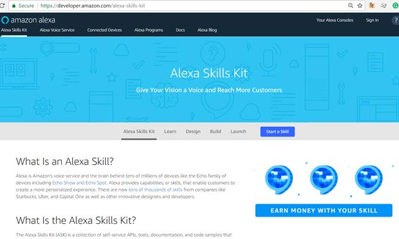
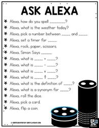
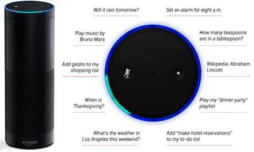
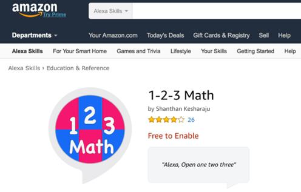
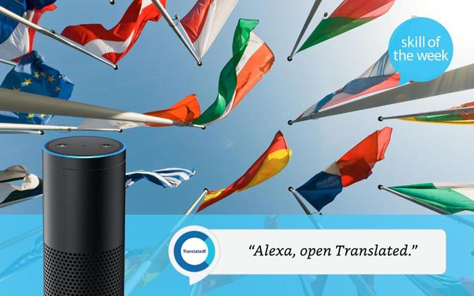

Data publicării: 08.03.2018
Autor articol: Adrian Iftene
Introducere
Interfețele utilizator bazate pe voce (Voice User Interfaces – VUI), cum ar fi Amazon Alexa, pot transforma educația. Alexa este serviciul vocal al Amazonului și creierul din spatele a milioane de dispozitive, inclusiv Amazon Echo. Alexa oferă capabilități sau abilități care permit clienților să creeze o experiență personalizată. Există acum peste 12.000 de skills (competențe) printre serviciile disponibile la Amazon de la companii precum Starbucks, Uber și Capital One, precum și de la designeri și dezvoltatori inovatori (Amazon Alexa, 2018).

De la încercarea acestor designeri și dezvoltatori de servicii bazate pe voce de a reinventa viața în campus sau în sala de clasă, posibilitățile oferite de interacțiunea prin voce sunt nesfârșite. Fie că sunteți student, profesor sau administrator IT, Alexa vă poate ajuta să vă reimaginați lumea. Cei de la Amazon oferă pentru toate aceste categorii de utilizatori promoții și-i sprijină să creeze serviciile de care au nevoie pentru Alexa.
Abilități Alexa folosite în educație
În cele ce urmează vom vedea diverse moduri în care Alexa poate fi folosit în procesul educațional (Etherington, 2017), (Lewis, 2017), (Lewis, 2017a).
Alexa, read from Kindle
Această abilitate a fost creată pentru a citi cea mai recentă carte deschisă din biblioteca de pe Kindle și ea va începe să citească din pagina care a fost deschisă aceasta ultima oară (Lewis, 2017a). Vocea lui Alexa va citi textul, spre deosebire de o înregistrare audio. De asemenea, poate reîncepe de la începutul capitolelor, dacă este necesar. Dacă veți testa această abilitate cu o carte, veți constatat că Alexa pronunță cuvintele în mod corect, în cea mai mare parte, și estea ușor de urmărit. Dacă veți folosi și suportul oferit de carte pentru a susține rostirea textului cu citirea textului, veți avea o modalitate ce vă va ajuta să creați corelații între acestea (vezi Figura 2).
Alexa, read me a bedtime story
Când este activată, această abilitate va citi o poveste aleasă aleator din biblioteca Amazon Rapids (vezi Figura 3).
Povestirile sunt citite de actori vocali profesioniști și se schimbă destul de frecvent. Această abilitate se adresează copiilor, dar este minunată pentru oricine dorește să audă o poveste ușoară înainte de culcare (Lewis, 2017a).
Similar avem opțiunile “Alexa, read (title) on Audible” și “Alexa, read me a poem” care de asemenea ne pornesc fie un fișier audio care conține titlul cerut, fie apelează la un serviciu care primește o poezie, pe care o citește utilizatorului. Astfel, avem posibilitatea să ni se citească cărți cu povești, poezii, etc. și avem ocazia să ne dezvoltăm cunoștințele și vocabularul.
Alexa, what’s the definition of (a word)?
Folosind un dicționar încorporat, Alexa poate căuta definiția oricărui cuvânt, deși are unele dificultăți cu homonimele și homofonele – cuvintele care sunt pronunțate la fel, dar înseamnă lucruri diferite. Alexa poate, de asemenea, să scrie cuvinte când îi cerem acest lucru. După cum putem vedea în Figura 4, putem apela la Alexa pentru a ne ajuta cu răspunsul la anumite operații matematice, îi putem cere sinonime pentru un cuvânt (Lewis, 2017), etc.

Alexa, Wikipedia (word)
Alexa poate citi articole Wikipedia despre o varietate de subiecte atunci când este întrebat (Lewis, 2017). Putem să-i cerem să citească articole Wikipedia pe o tematică care ne interesează, iar Alexa va citit informațiile fără probleme și într-un ritm ușor de urmat. Această caracteristică este utilă în special atunci când învățăm noțiuni noi dintr-o lecție pe orice tematică (istorie, geografie, literatură, etc.) sau când dorim să soluționăm o dezbatere între prieteni sau familie cu privire la un anumit subiect (vezi Figura 5).

Alexa, how do you spell (word)
Alexa ne poate ajuta să aflăm cum se scrie pe litere un anume cuvânt (Lewis, 2017). Testele pe mai multe cuvinte de lungimi diferite pot demonstra cu ușurință acest lucru. Cu entitățile de tip nume, lucrurile stau un pic diferit, Alexa nereușind de fiecare dată să ne dea varianta corectă. De asemenea, Alexa are probleme cu homofonele (cuvintele care sunt pronunțate la fel, dar se scriu diferit).
Alexa, what is (math equation)
Această opțiune este utilă pentru un student care învață operațiile aritmetice de bază (+, -, /, x), sau pentru cineva care are probleme cu vederea, și care ar avea greutăți în a citi un ecran standard de calculator (Lewis, 2017). Uneori, când împărțirea ne oferă prea multe zecimale, Alexa ne spune prea multe, iar citirea lor este inutilă de cele mai multe ori. În Figura 6 de mai jos putem observa unul din jocurile disponibile pe tematica matematicii (1-2-3 Math).

Alexa, ask translated how to say
Permițând abilitățile de traducere, utilizatorii pot întreba “Alexa, ask translated how to say”, urmată de cuvânt, urmată de limba dorită (Lewis, 2017). Vocea Alexa nu pronunță de fapt cuvântul, aplicația are propriul fișier audio de la vorbitori nativi. Alexa va trimite, de asemenea, modul de pronunție al cuvântului în aplicația Alexa. Testarea acestei opțiuni pe limbile spaniolă, japoneză, italiană și rusă, s-a realizat cu rezultate foarte bune (vezi Figura 7).

Concluzii
Amazon Alexa poate fi folosit într-o mulțime de moduri în procesul educațional. Îi putem cere să ne citească cărți, poezii sau conținut Wikipedia, îi putem cere să ne ofere definiții sau sinonime pentru un cuvânt, să ni-l citească pe litere, să ni-l traducă într-o altă limbă, pe care i-o specificăm, etc. Putem să-i cerem sprijinul lui Alexa în ceea ce privește operațiile de bază din aritmetică, dar putem instala și folosi jocuri matematice, care sunt disponibile pe site-ul Amazon.
Toate aceste facilități ale lui Alexa ne ajută pe de o parte să învățăm mult mai ușor, dar pe de altă parte le putem folosi în momentul în care ne facem lecțiile, pentru a ne verifica sau corecta soluțiile pe care le-am oferit. Se prevede ca în perioada următoare să apară și mai multe skill-uri pentru educație printre resursele celor de la Amazon.
Referințe bibliografice
● Amazon Alexa (2018) Alexa in Education. Master the UI of the future http://developer.amazon.com/alexa/education accesat în Martie 2018
● Etherington, C. (2017) Amazon’s Alexa: Your Next Teacher. eLearning INSIDE, News. http://news.elearninginside.com/amazons-alexa-your-next-teacher/ accesat în Martie 2018
● Lewis, V. (2017) 6 Ways Amazon Alexa can Help with Homework. Perkins: School for the blind eLearning http://www.perkinselearning.org/technology/blog/6-ways-amazon-alexa-can-help-homework accesat în Martie 2018
● Lewis, V. (2017a) How Amazon Alexa Can Help You Read. Perkins: School for the blind eLearning http://www.perkinselearning.org/technology/blog/how-amazon-alexa-can-help-you-read accesat în Martie 2018